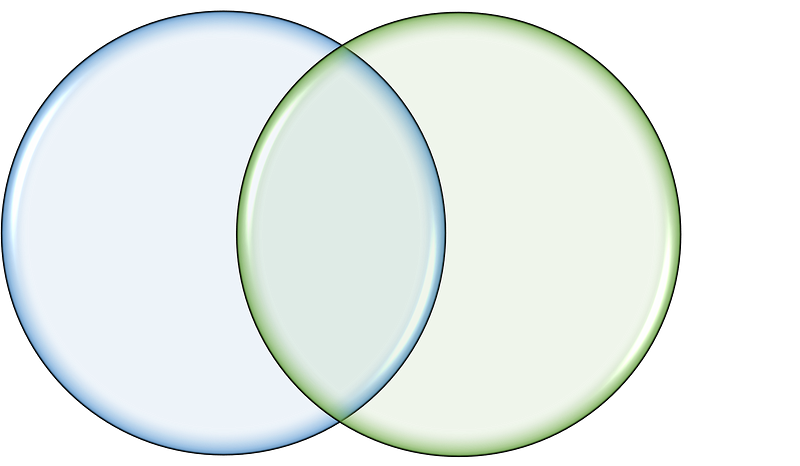

Joining the Pieces: How to Use Join Functions to Create a Complete Picture of Your Data

Data Joins Unleashed: The Magic Behind Merging and Matching Data
Data joins are a fundamental aspect of data science and analysis. They allow us to combine data from different sources, such as merging data from different tables or datasets, or even combining data from different databases. However, the concept of data joins is not unique to R, but rather a fundamental concept in mathematics and computer science based on set theory.
In set theory, data can be thought of as sets, and joining data is equivalent to performing set operations such as union, intersection, and difference. This means that the logic of data joins is not specific to R or any other programming language but is rather a universal concept. Understanding the principles behind data joins and the mathematical set operations they are based on is critical to performing effective data analysis.
In the world of data science, data joins allow us to combine information from different sources, enabling us to gain insights that we couldn’t have achieved by analyzing each dataset separately. By bringing together data from different sources, we can build a more complete and accurate picture of the underlying phenomena we’re interested in, whether it’s analyzing customer behavior, market trends, or scientific data. Data joins can help us identify patterns, correlations, and causal relationships that we might not have been able to discern otherwise.
Overall, data joins are a powerful tool for any data analyst or scientist to have in their toolbox. By understanding the fundamental principles behind data joins and how they are used in different contexts, we can become more effective at analyzing and interpreting data, unlocking new insights and discoveries that can help us solve real-world problems.
Left and Right and Everything In-Between: The Mutating World of Data Joins
Mutating joins, also known as non-equi joins, allow us to merge two or more datasets based on a common variable, where the values of that variable don’t necessarily match exactly. In dplyr, we have several functions for performing mutating joins:
left_join(): This function keeps all records from the first (left) dataset and only those records from the second (right) dataset that have a matching value in the common variable(s) specified. Any records from the second dataset that don’t have a match in the first dataset will haveNAvalues for the corresponding columns in the result.
# create two datasets
df1 <- tibble(x = c(1, 2, 3), y = c("A", "B", "C"))
df2 <- tibble(x = c(2, 3, 4), z = c("D", "E", "F"))
# perform a left join
left_join(df1, df2, by = "x")
# A tibble: 3 x 3
# x y z
# <dbl> <chr> <chr>
#1 1 A NA
#2 2 B D
#3 3 C Eright_join(): This function works similarly toleft_join(), but keeps all records from the second (right) dataset and only those records from the first (left) dataset that have a matching value in the common variable(s) specified. Any records from the first dataset that don’t have a match in the second dataset will haveNAvalues for the corresponding columns in the result.
# perform a right join
right_join(df1, df2, by = "x")
# A tibble: 3 x 3
# x y z
# <dbl> <chr> <chr>
#1 2 B D
#2 3 C E
#3 4 NA Finner_join(): This function only keeps the records from both datasets that have a matching value in the common variable(s) specified.
# perform an inner join
inner_join(df1, df2, by = "x")
# A tibble: 2 x 3
# x y z
# <dbl> <chr> <chr>
#1 2 B D
#2 3 C Efull_join(): This function keeps all records from both datasets and fills inNAvalues for any records that don’t have a match in the other dataset.
# perform a full join
full_join(df1, df2, by = "x")
# A tibble: 4 x 3
# x y z
# <dbl> <chr> <chr>
#1 1 A NA
#2 2 B D
#3 3 C E
#4 4 NA FBy using these mutating join functions in dplyr, we can easily merge datasets based on common variables and keep all the relevant information from both datasets in the merged result.
When we use mutating join functions in dplyr, we might run into situations where the two datasets we are joining have columns with the same names. To differentiate these columns in the merged result, dplyr provides an option to add suffixes to the column names. By default, dplyr will add a suffix of .x to the columns from the left dataset and .y to the columns from the right dataset. However, we can customize these suffixes using the suffix argument in the join function. For example:
# create two datasets with columns of the same name
df1 <- tibble(x = c(1, 2, 3), y = c("A", "B", "C"), z = c("D", "E", "F"))
df2 <- tibble(x = c(2, 3, 4), y = c("G", "H", "I"), z = c("J", "K", "L"))
# perform a left join with custom suffixes
left_join(df1, df2, by = "x", suffix = c(".left", ".right"))
# A tibble: 3 x 5
# x y.left z.left y.right z.right
# <dbl> <chr> <chr> <chr> <chr>
#1 1 A D NA NA
#2 2 B E G J
#3 3 C F H KIn the example above, we used suffix = c(".left", ".right") to add the .left suffix to the columns from the left dataset and the .right suffix to the columns from the right dataset. This way, we can easily distinguish the columns from each dataset in the merged result.
The Yin and Yang of Data Joins: Slice and Dice Data Like a Samurai
Filtering joins are another type of join available in dplyr that do not merge the two datasets, but instead filter them based on their relationship. There are two types of filtering joins in dplyr: semi-joins and anti-joins.
A semi-join filters the left dataset based on the presence of matching rows in the right dataset. It returns all rows from the left dataset where there is a match in the right dataset, but only includes the columns from the left dataset. In other words, it keeps only the rows in the left dataset that have a matching row in the right dataset. We can use the semi_join() function in dplyr to perform a semi-join:
# create two datasets with overlapping columns
df1 <- tibble(x = c(1, 2, 3), y = c("A", "B", "C"))
df2 <- tibble(x = c(2, 3, 4), z = c("D", "E", "F"))
# perform a semi-join
semi_join(df1, df2, by = "x")
# A tibble: 2 x 2
# x y
# <dbl> <chr>
#1 2 B
#2 3 CIn the example above, we used semi_join() to keep only the rows from df1 where there is a matching row in df2 based on the x column. The resulting tibble includes only the x and y columns from df1.
On the other hand, an anti-join filters the left dataset based on the absence of matching rows in the right dataset. It returns all rows from the left dataset that do not have a match in the right dataset. We can use the anti_join() function in dplyr to perform an anti-join:
# create two datasets with overlapping columns
df1 <- tibble(x = c(1, 2, 3), y = c("A", "B", "C"))
df2 <- tibble(x = c(2, 3, 4), z = c("D", "E", "F"))
# perform an anti-join
anti_join(df1, df2, by = "x")
# A tibble: 1 x 2
# x y
# <dbl> <chr>
#1 1 AIn the example above, we used anti_join() to keep only the rows from df1 that do not have a matching row in df2 based on the x column. The resulting tibble includes only the x and y columns from df1.
The Power of Combination: How Data Joins Can Unlock New Insights in Your Analysis
Joins are an essential tool for anyone working with datasets in R. They allow you to combine data from multiple datasets into a single, unified dataset, which can be useful in a variety of scenarios. Here are some reasons why you might want to use joins:
- Combining data from multiple sources: Often, data is stored in multiple tables or datasets. For example, you might have one dataset containing information about customers, and another dataset containing information about their orders. By joining these two datasets, you can create a single dataset that contains all of the relevant information about customers and their orders.
- Simplifying data analysis: Joining data can make data analysis easier by allowing you to work with a single, unified dataset. This can be especially useful when you are working with large datasets or when you want to perform complex analyses that require data from multiple sources.
- Improving data quality: Joining data can help you identify errors or inconsistencies in your data. For example, if you are joining two datasets based on a common variable such as customer ID, you can quickly identify any missing or duplicate IDs.
- Saving time and effort: Joining data can save you time and effort by automating the process of combining data from multiple sources. This is especially true if you are working with large datasets or if you need to perform the same analysis on multiple datasets.
In summary, joins are a powerful tool for anyone working with datasets in R. By understanding how to use joins in R, you can become a more effective and efficient data analyst.
The Joins of Fate: Understanding the Consequences of Joining Your Data
When selecting a join type in R, it’s important to consider the consequences of each type. Here are some important factors to keep in mind:
- Matching: Inner join only returns the rows that have matching values in both datasets, while left join and right join return all of the rows from the left and right datasets, respectively, along with matching rows from the other dataset. Full join returns all rows from both datasets, with missing values for any non-matching rows.
- Data loss: Inner join can result in the loss of data that does not have a match, while left and right join can result in many missing values if there are many non-matching rows. Full join can result in a very large result if there are many non-matching rows.
- Filtering: Semi-join only returns the rows from the left dataset that have matching values in the right dataset, while anti-join only returns the rows from the left dataset that do not have matching values in the right dataset.
It’s important to weigh the advantages and disadvantages of each join type in order to select the appropriate one for your analysis. Inner join is useful when you only need data that exists in both datasets, while left and right join can be useful when you want to keep all of the data from one dataset and only matching data from the other. Full join is useful when you want to keep all of the data from both datasets. Semi-join and anti-join can be useful when you want to filter or identify records based on values in another dataset. Additionally, be aware of potential data loss and large result sizes when selecting a join type.
Exploring the Data Joining Jungle with Confidence and Precision
In this article, we’ve covered the basics of joining data using dplyr in R. We started with an explanation of joins as mathematical operations on sets, before diving into the different types of joins available in dplyr. We covered mutating joins, which add new columns to the existing data frame, and filtering joins, which filter rows based on values in another data frame. We also discussed suffixes in joins and their importance in disambiguating column names.
We then went on to talk about the consequences of each type of join, including data loss and the potential for large result sizes. It’s important to weigh the advantages and disadvantages of each join type in order to select the appropriate one for your analysis.
In conclusion, joining data is a crucial step in data analysis and dplyr provides a powerful set of tools to make this process easy and intuitive. With the ability to perform complex joins with just a few lines of code, dplyr is an essential package for any data scientist working in R.
Stay tuned for our next post, where we’ll cover tidyr, a package for reshaping and transforming data. We’ll show you how to use tidyr to clean and prepare your data for analysis, before diving into some common data manipulation tasks. Thanks for reading!